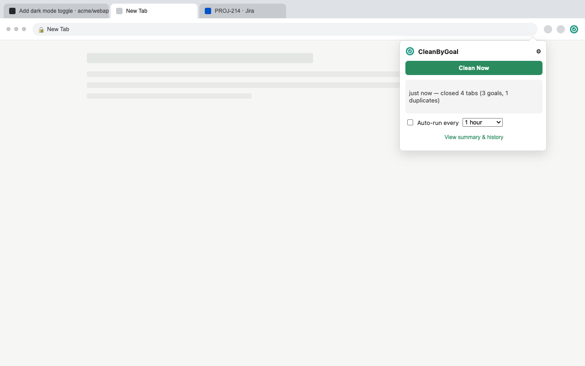
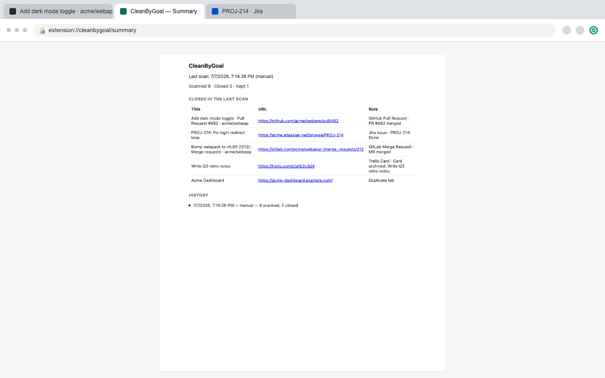

A merged GitHub PR. A closed GitLab MR. A Jira ticket marked Done. An archived Trello card. CleanByGoal checks the tabs you already have open and closes the ones whose task is finished — plus clears out duplicates — so your tab bar stops tracking work you already finished.
What it checks
Every check happens locally, using the page you already have open and the session you're already logged into. There's no external server, no analytics, no account to create. Settings and history are stored only in your own browser profile. Read the full privacy policy →
In use

